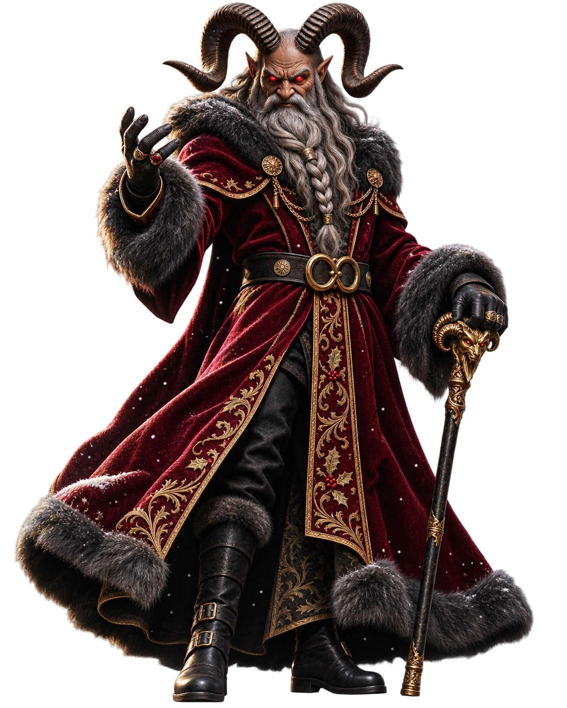

TAX SEASON / 001
WHO CLAIMED
ME ON THEIR
TAXES?!
Been alive for centuries, and the IRS still won't let him write off coal. Somebody explain that.
STATUS: AUDIT PENDING
ANCIENT DEMON // YEAR-ROUND MOTION
I'm an ancient demon with expensive taste, a Wi-Fi bill, and a bag to chase. Santa can have his one night. I'm outside all year. 👹
EST. BEFORE DIRECT DEPOSIT STILL TRYNA GET PAID

SANTA WORKS ONE NIGHT. I GOT BILLS.
 EVIDENCE // DO NOT FEED AFTER MIDNIGHT
EVIDENCE // DO NOT FEED AFTER MIDNIGHTThis fool was scaring villages before electricity. Somebody gave him a smartphone. Now he thinks he runs the economy.
December is when he gets festive. The other eleven months? He's in the trenches talking trash, chasing motion, and minding everybody's business but his own.
“SANTA GOT ONE SHIFT A YEAR. I GOT BILLS.” — CRAMPUS
The old man don't hibernate. Winter, spring, summer, fall—he still gotta eat.
Been alive for centuries, and the IRS still won't let him write off coal. Somebody explain that.
STATUS: AUDIT PENDINGHe wore the fur coat in July. Mind your business. That coat cost money.
GET EXPOSED ↗He been doing this for free since the Dark Ages. Now everybody selling tickets? Where's his cut?
STEAL A PUNCHLINE ↗Christmas is home court. The rest of the year? Away games. We still getting buckets.
Put a name in. CRAMPUS pulls the receipts. Screenshot it, tag your people, start a little trouble. No appeals.
OFFICIAL RECEIPT REPORT
CHARGE NO. 1225-000
Put a name in. CRAMPUS got questions.
SENTENCE: AWAITING THE RECEIPTS.
CRAMPUS // DEPARTMENT OF PETTY BUSINESS
CRAMPUS BEEN WAITING TO SAY SOMETHING. 👹
Been alive since candlelight. Now he's arguing with strangers on the internet. Somebody take his phone.
He already got something to say.
Santa only work one night a year. I need a bag EVERY month. 👹 #CRAMPUS
A thousand years old and still taking better pictures than half the timeline. Pick your favorite.
Pull up for the memes, the music, and the foolishness. We ain't disappearing December 26. The bag don't take holidays.
Ancient Christmas demon. Horns, red eyes, expensive fur. Petty as hell. Somehow got Wi-Fi before a decent attitude.
Hell no. Christmas is his Super Bowl. The other eleven months? He still got bills, beef, and a bag to chase.
Santa got a monopoly, free labor, and a flying delivery fleet. CRAMPUS been looking at that business model for centuries. 😂
Drop a nickname in the Receipt Check. CRAMPUS will handle the disrespect. It's all jokes, and your name stays in your browser.
Nah. No wallet connects, no checkout. Come for the character, stay for the chaos.